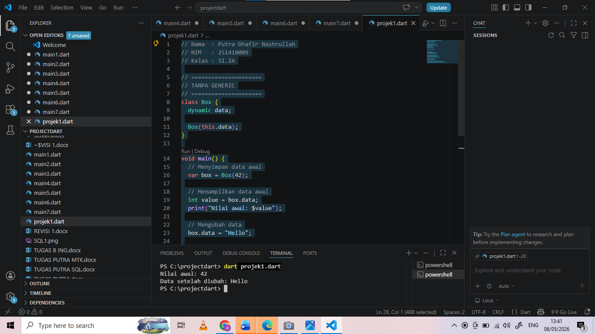
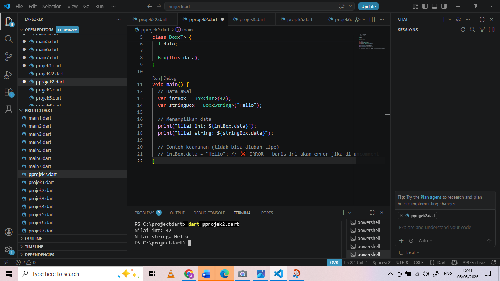

Putra Dhafir Nashrullah
251410009
SI2A
// Nama : Yoza Ulpia Rafila
// NIM : 251410004
// Kelas : SI.2A
// =====================
// TANPA GENERIC
// =====================
class Box {
dynamic data;
Box(this.data);
}
void main() {
// Menyimpan data awal
var box = Box(42);
// Menampilkan data awal
int value = box.data;
print("Nilai awal: $value");
// Mengubah data
box.data = "Hello";
// Menampilkan data setelah diubah
print("Data setelah diubah: ${box.data}");
}

// Nama : Yoza Ulpia Rafila
// NIM : 251410004
// Kelas : SI.2A
// =====================
// DENGAN GENERIC
// =====================
class Box {
T data;
Box(this.data);
}
void main() {
// Data awal
var intBox = Box(42);
var stringBox = Box("Hello");
// Menampilkan data
print("Nilai int: ${intBox.data}");
print("Nilai string: ${stringBox.data}");
// Contoh keamanan (tidak bisa diubah tipe)
// intBox.data = "Hello"; // ❌ ERROR
}
